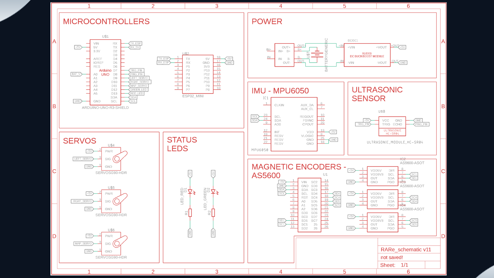
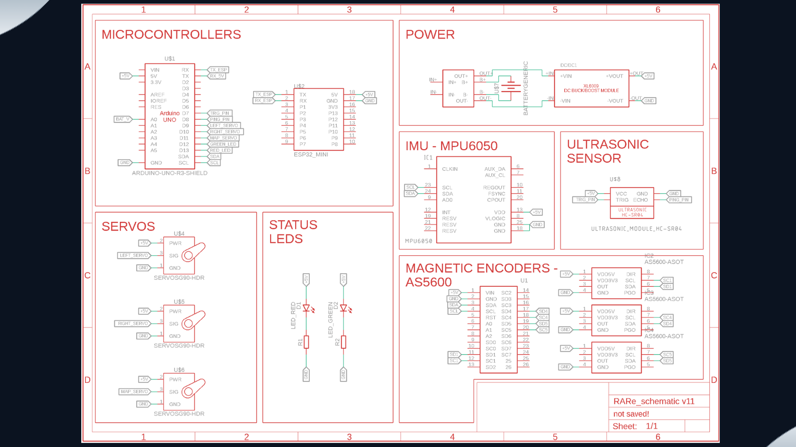

Project
Mapping Robot: SONAR Point-Cloud Mapping & ROS Visualization
A differential-drive robot that generates real-time SONAR point clouds and visualizes them in ROS 2. The platform streams sensor data from an ESP32 Micro-ROS node over Wi-Fi, estimates pose using fused IMU and wheel encoder odometry, and produces a 360° scan-based point map for spatial awareness.
Demo
Highlights
- Micro-ROS + ROS 2 streaming: Built an ESP32 Micro-ROS node streaming sensor topics at 20–50 Hz over Wi-Fi to a ROS 2 ground station.
- Pose estimation: Implemented odometry using MPU6050 IMU + magnetic encoders with complementary and Kalman filters for stable heading and position estimates.
- 360° SONAR scanning: Designed a rotating SONAR module with ~1° angular resolution to generate real-time point measurements for mapping.
System Overview
The robot publishes encoder ticks and IMU measurements from the ESP32 to a ROS 2 workstation. A fusion layer estimates pose and transforms SONAR range readings into a point cloud in the robot/world frame. RViz visualizes the evolving point map during motion, enabling live debugging and system validation.
Architecture
 



Technical Breakdown
ESP32 Micro-ROS Node
The embedded stack publishes time-stamped sensor measurements over Wi-Fi at 20–50 Hz. Micro-ROS provides ROS 2-compatible messaging so the robot behaves like a native ROS 2 sensor platform. The approach keeps the robot lightweight while enabling full ROS tooling on the ground station.
Odometry & Sensor Fusion
Wheel odometry from magnetic encoders provides incremental motion estimates while the MPU6050 contributes orientation dynamics. A complementary filter smooths high-frequency IMU noise, and a Kalman filter improves heading/pose stability under drift and wheel slip.
SONAR Point-Cloud Generation
A rotating SONAR produces 360° scans with ~1° angular resolution. Each range measurement is converted into (x, y) points in the robot frame and transformed into the world frame using the estimated pose. The resulting point set is published for visualization and can be extended into occupancy grids or SLAM-style mapping.
Key Takeaways
- Demonstrates embedded-to-ROS 2 integration with real-time constraints
- Shows practical odometry and filtering for pose estimation
- Builds a complete perception-to-visualization mapping pipeline (SONAR → point cloud → RViz)
- Extensible foundation for occupancy mapping and SLAM